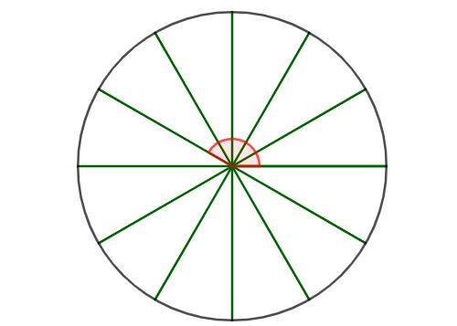
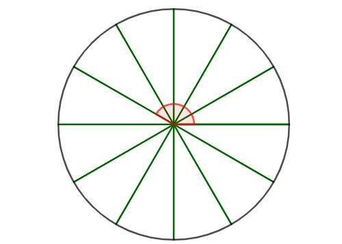
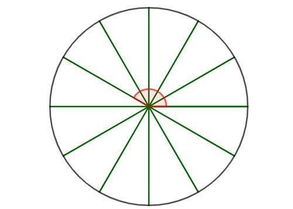

.png) 

Esprimere sia in radianti che in gradi la misura dei quattro angoli evidenziati in rosso.
Scorrette verso destra per visualizzare le altre figure
Esprimere sia in radianti che in gradi la misura dei quattro angoli evidenziati in rosso.
Scorrette verso destra per visualizzare le altre figure
Esprimere sia in radianti che in gradi la misura degli otto angoli evidenziati in rosso.

Scorrette verso destra per visualizzare le altre figure
Le misure dei seguenti angoli sono espresse in gradi. Trasformarle in radianti:
⚠️ Per questo esercizoio è necessario usare la calcolatrice.
Le misure dei seguenti angoli sono espresse in radianti. Trasformarle in gradi:
⚠️ Per questo esercizoio è necessario usare la calcolatrice.
Nella seguente figura il lato \(\color{green}{BE}\) misura \(\color{green}{x}\). L'angolo \(\color{blue}{BHE}\) evidenziato in figura misura \(\color{blue}{\alpha}\).
Esprimere l'area del triangolo \(\color{red}{EFG}\) in funzione di \(\color{green}{x}\) ed \(\color{blue}{\alpha}\)